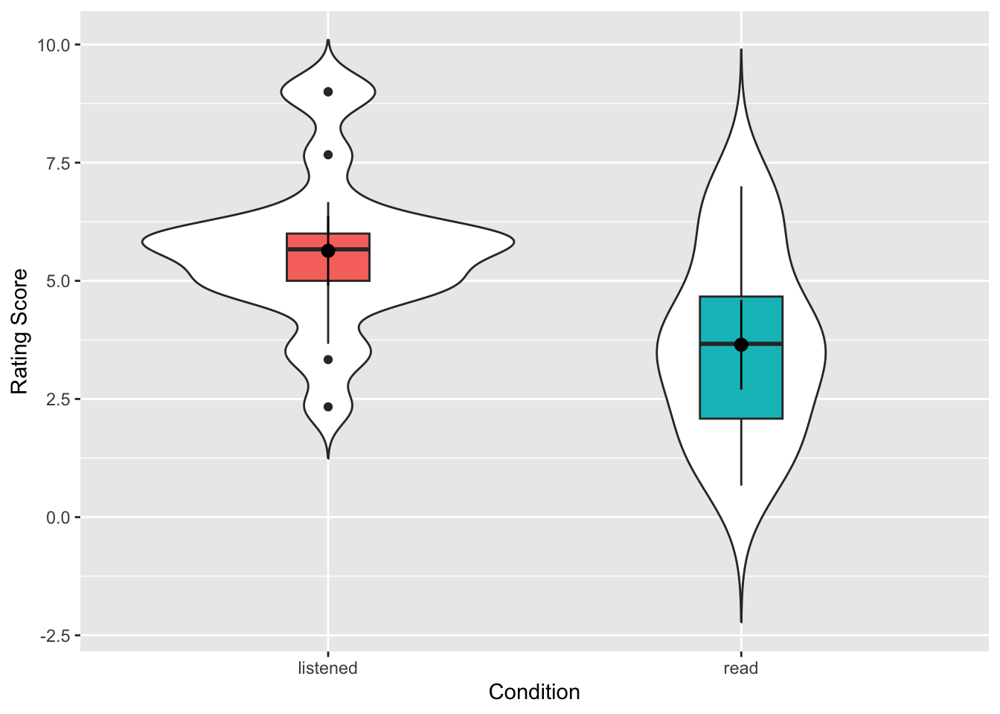
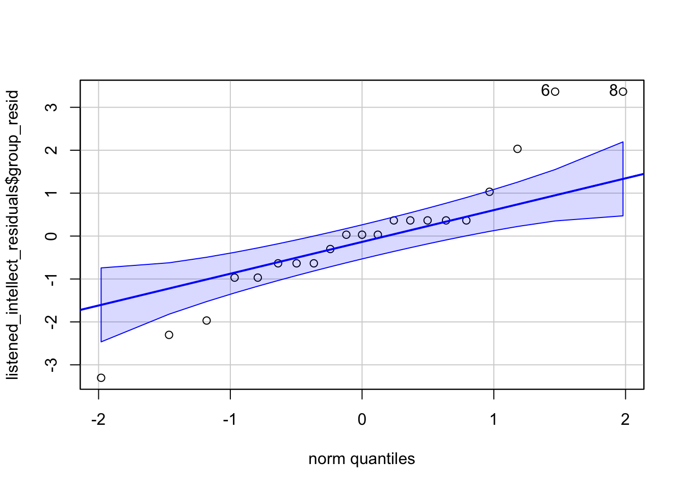

10 t-tests
Experiments where you compare results from two conditions or two groups are very common within Psychology as often we want to know if there is an effect of a given variable. One of the really confusing things however about research design is that there are many names for the same type of design. To clarify:
- One-sample are used to study one group of people against a known norm or criterion - for example, comparing the mean IQ of a sample against a known population norm such as an IQ of 100.
- Independent-samples and between-subjects designs mean the same thing - different participants in different conditions.
- In contrast, within-subjects, dependent-samples, paired-samples, and repeated-measures all tend to mean the same participants in all conditions
- Matched-pairs design means different people in different conditions but you have matched participants across the conditions so that they are effectively the same person (e.g. age, IQ, Social Economic Status, etc)
- Mixed-design is when there is a combination of within-subjects and between-subjects designs in the one experiment. For example, say you are looking at attractiveness and dominance of male and female faces. Everyone might see both male and female faces (within) but half of the participants do ratings of attractiveness and half of the participants do ratings of trustworthiness (between).
To get a better understanding of how some of these tests run we will look at running an example of a between-subjects t-test and a within-subjects t-test through a series of activities. Remember that the solutions are at the bottom of the page if you are stuck, and please do ask questions on the forums.
10.1 Between-Subjects t-tests (two-sample)
We will begin by looking at the between-subjects t-test which is used for comparing the outcome in two groups of different people. Here we will be using data from Schroeder and Epley (2015) on the perception of people from their job applications. You can take a look at the Psychological Science article here, Schroeder, J. and Epley, N. (2015). The sound of intellect: Speech reveals a thoughtful mind, increasing a job candidate’s appeal. Psychological Science, 26, 277–891., if you like but it is not essential for completing the activities. The abstract from this article explains more about the different experiments conducted, and we will be specifically looking at the data set from Experiment 4, based on information from the Open Stats Lab. The abstract reads:
A person’s mental capacities, such as intellect, cannot be observed directly and so are instead inferred from indirect cues. We predicted that a person’s intellect would be conveyed most strongly through a cue closely tied to actual thinking: his or her voice. Hypothetical employers (Experiments 1-3b) and professional recruiters (Experiment 4) watched, listened to, or read job candidates’ pitches about why they should be hired. These evaluators (the employers) rated a candidate as more competent, thoughtful, and intelligent when they heard a pitch rather than read it and, as a result, had a more favourable impression of the candidate and were more interested in hiring the candidate. Adding voice to written pitches, by having trained actors (Experiment 3a) or untrained adults (Experiment 3b) read them, produced the same results. Adding visual cues to audio pitches did not alter evaluations of the candidates. For conveying one’s intellect, it is important that one’s voice, quite literally, be heard.
To summarise, 39 professional recruiters from Fortune 500 companies evaluated job pitches of M.B.A. candidates from the University of Chicago Booth School of Business. The methods and results appear on pages 887-889 of the article if you want to look at them specifically for more details and the original data, in wide format, can be found at the Open Stats Lab website for later self-directed learning. Today however, we will be working with a modified version in “tidy” format which can be downloaded below and what we plan to do is reproduce the results from the article on Pg 887.
10.1.1 Data and Descriptives
As always, the first activity is about getting ourselves ready to analyse the data so try out the steps and if you need help, consult the earlier chapters.
10.1.1.1 Activity 1: Set-up
- Open RStudio and set the working directory to your chapter folder. Ensure the environment is clear.
- If you’re using the Rserver, avoid a number of issues by restarting the session - click
Session-Restart R
- If you’re using the Rserver, avoid a number of issues by restarting the session - click
- Open a new R Markdown document and save it in your working directory. Call the file “ttests”.
- Download evaluators.csv and ratings.csv and save them in your t-test folder. Make sure that you do not change the file names at all.
- If you prefer you can download the data in a zip folder by clicking here
- Remember not to change the file names at all and that
data.csvis not the same asdata (1).csv.
- Delete the default R Markdown welcome text and insert a new code chunk that loads the following packages, in this specific order, using the
library()function. Remember the solutions if needed.- Load the packages in this order,
Hmisc,broom,car,effectsize,report, andtidyverse - again we have not used some of these packages so you will likely need to install some of them using
install.packages(). Remember though that you should only do this on your own machine and only in the console window. If you are using the RServer you will not need to install them.
- Load the packages in this order,
- Finally, load the data held in
evaluators.csvas a tibble into an object namedevaluatorsusingread_csv().
Remember to have a look at your data to help you understand the structure and the layout of the data. You can do this in whatever way you prefer.
Now that we have our data, and have explored it, there is a few things we can do to make working with it a bit easier. If you look at the data, and in particular the sex column, you will see it is actually coded as numeric but we will want to treat it as categorical. Secondly, it can be tricky to work with 1s and 2s when you mean people, so we can “recode” the variables into labels that are easier to work with. That is what we will do here using a combination of mutate(), which we already know, and the recode() function from the dplyr package that is loaded in as part of the tidyverse, and the as.factor() function from base. Converting categorical data to factors will make it easier to work with in visualisations and analysis.
10.1.1.2 Activity 2: Explore the dataset
In a new code chunk, copy the code below and see if you can follow it.
- First we use
mutate()andrecode()to recodesexinto a new variable calledsex_labelsso that1=maleand2=female.- Be careful using
recode()as there are multiple functions in different packages called with the same name so it is better to use thepackage::function()approach and specifydplyr::recode()to get the right one.
- Be careful using
- Then we use
mutate()andas.factor()to overwritesex_labelsandconditionas factors.
Now see if you can create a count of the different sex labels to answer the following question. One approach would be group_by() %>% count() but what would you group by? Maybe store this tibble in an object called eval_counts.
- How many participants were noted as being female:
- How many participants were noted as being male:
- How many data points are missing for
sex?
10.1.1.3 Activity 3: Ratings
Excellent work. Our evaluator data is ready to work with and we are now going to calculate what is called an “overall intellect rating” given by each evaluator, calculated by averaging the ratings of competent, thoughtful and intelligent from each evaluator; held within ratings.csv. This overall rating will measure how intellectual the evaluators thought candidates were, depending on whether or not the evaluators read or listened to the candidates’ resume pitches. Note, however, we are not looking at ratings to individual candidates; we are looking at overall ratings for each evaluator. This is a bit confusing but makes sense if you stop to think about it a little. What we are interested in is how the medium they received the resume impacted their rating of the candidate. Once we have done that, we will then combine the overall intellect rating with the overall impression ratings and overall hire ratings for each evaluator, with the end goal of having a tibble called ratings2 - which has the following structure:
| eval_id | Category | Rating | condition | sex_labels |
|---|---|---|---|---|
| 1 | hire | 6.000 | listened | female |
| 1 | impression | 7.000 | listened | female |
| 1 | intellect | 6.000 | listened | female |
| 2 | hire | 4.000 | listened | female |
| 2 | impression | 4.667 | listened | female |
| 2 | intellect | 5.667 | listened | female |
The following steps describe how to create the above tibble and it would be good practice to try this out yourself. Look at the table and think what do I need? The trick when doing data analysis and data wrangling is to first think about what you want to achieve - the end goal - and then think about what functions you need to use to get there. The solution is hidden just below the stpes of course if you want to look at it. Let’s look at the steps. Steps 1, 2 and 3 calculate the new overall intellect rating. Steps 4 and 5 combine this rating to all other information.
Load the data found in
ratings.csvas a tibble into an object calledratings. (e.g. read the csv)filter()only the relevant variables (thoughtful, competent, intelligent) into a new tibble stored in an objected called something useful (we will call oursiratings), and then calculate a meanRatingfor each evaluator (e.g. group_by & summarise).Add on a new column called
Categorywhere every entry is the wordintellect. This tells us that every number in this tibble is an intellect rating. (e.g. mutate)Now create a new tibble called
ratings2and filter into it just the “impression” and “hire” ratings from the originalratingstibble.Next, bind this tibble with the tibble you created in step 3 to bring together the intellect, impression, and hire ratings, in
ratings2. (e.g.bind_rows(object1, object2))Join
ratings2with theevaluatortibble that we created in Task 1 (e.g.inner_join()). Keep only the necessary columns as shown above (e.g.select()) and arrange by Evaluator and Category (e.g.arrange()).
# 1. load in the data
ratings <- read_csv("book/ratings.csv")
# 2. first step: pull out the ratings associated with intellect
iratings <- ratings %>%
filter(Category %in% c("competent", "thoughtful", "intelligent"))
# second step: calculate means for each evaluator
imeans <- iratings %>%
group_by(eval_id) %>%
summarise(Rating = mean(Rating))
# 3. add Category variable
# this way we can combine with 'impression' and 'hire' into a single table, very useful!
imeans2 <- imeans %>%
mutate(Category = "intellect")
# 4., 5. & 6. combine into a single table
ratings2 <- ratings %>%
filter(Category %in% c("impression", "hire")) %>%
bind_rows(imeans2) %>%
inner_join(evaluators, "eval_id") %>%
select(-age, -sex) %>%
arrange(eval_id, Category)- Finally, calculate the n, mean and SD for each condition and category to help with reporting the descriptive statistics.
10.1.2 Visualising two groups
Brilliant! Now that we have our data in a workable fashion, we are going to start looking at some visualisations and making figures. You should always visualise your data before you run a statistical analysis. Visualisations serve as part of the descriptive measures and they help you interpret the results of the test but they also give you an understanding of the spread of your data as part of the test assumptions. For data with a categorical IV, we are going to look at using the violin-boxplots that we saw in the introduction to visualisation chapter. In the past people would have tended to use barplots but as Newman and Scholl (2012) point out, barplots are misleading to viewers about how the underlying data actually looks. You can read that paper if you like, for more info, but hopefully by the end of this section you will see why violin-boxplots are more informative.
10.1.2.1 Activity 4: Visualisation
We will visualise the intellect ratings for the listened and the read conditions. The code we will use to create our figure is as follows with the explanation below. Put this code in a new code chunk and run it.
ratings2 %>%
filter(Category == "intellect") %>%
ggplot(aes(x = condition, y = Rating)) +
geom_violin(trim = TRUE) +
geom_boxplot(aes(fill = condition), width = .2, show.legend = FALSE) +
stat_summary(geom = "pointrange", fun.data = "mean_cl_normal") +
labs(x = "Condition", y = "Rating Score") +
geom_jitter(height = .1, width = .2)The first part of the code uses a pipe to filter the data to just the intellect rating:
-
ratings %>% filter(Category == "intellect)is the same asfilter(ratings, Category == "intellect") - this code also reflects nicely the difference between pipes (
%>%) used in wrangling and the+used in the visualisations with ggplot. Notice that we switch from pipes to plus when we start adding layers to our visualisation.
The main parts of the code to create the violin-boxplot above are:
- ggplot() which creates our base layer and sets our data and our x and y axes.
-
geom_violin()which creates the density plot. The reason it is called a violin plot is because if your data are normally distributed it should look something like a violin.
-
geom_boxplot()which creates the boxplot, showing the median and inter-quartile range (see here if you would like more information). The boxplot can also give you a good idea if the data are skewed - the median line should be in the middle of the box. The more the median is moved towards one of th extremities of the box, the more your data is likely to be skewed.
-
geom_jitter()can be used to show individual data points in your dataset and you can change the width and height of the jitter. Note that this uses a randomised method to display the points so you will get a different output each time you run it. - And finally, we will use
stat_summary()for displaying the mean and confidence intervals. Within this function,fun.dataspecifies the a summary function that gives us the summary of the data we want to plot, in this case,mean_cl_normalwhich will calculate the mean plus the upper and lower confidence interval limits. You could also specifymean_sehere if you wanted standard error. Finally,geomspecifies what shape or plot we want to use to display the summary, in this case we want apointrange(literally a point (the mean) with a range (the CI)).
The figure will look like this:

An alternative version would be this shown below. Perhaps compare the two codes and see if you can see what makes the differences:
ratings2 %>%
filter(Category == "intellect") %>%
ggplot(aes(x = condition, y = Rating)) +
geom_violin(trim = FALSE) +
geom_boxplot(aes(fill = condition), width = .2, show.legend = FALSE) +
stat_summary(geom = "pointrange", fun.data = "mean_cl_normal") +
labs(x = "Condition", y = "Rating Score")
Try to answer the following question:
- In which condition did the evaluators give the higher ratings overall?
- Would the descriptives (means, sds, figure) be inline with the hypothesis that evaluators favour resumes they have listened to more than resumes they have read?
Nice and informative figure huh? It gives a good representation of the data in the two conditions, clearly showing the spread and the centre points. If you compare this to Figure 7 in the original paper you see the difference. We actually get much more information with our approach. We even get a sense that maybe the data is questionable on whether it is skewed or not, but more on that below.
The code is really useful as well so you know it is here if you want to use it again. But maybe have a play with the code to try out things to see what happens. For instance:
- Try setting
trim = TRUE,show.legend = FALSE, and/or altering the value ofwidthto see what these arguments do. - change the
Category == "intellect"toCategory == "hire"orCategory == "impression"to create visualisations of the other conditions.
10.1.3 Assumptions
Great. We have visualised our data as well and we have been able to make some descriptive analysis about what is going on. Now we want to get ready to run the actual analysis. But one final thing we are going to decide is which t-test? But hang on you say, didn’t we decide that? We are going to run a between-subjects t-test! Right? Yes! But, and you know what we are about to say, there is more than one between-subjects t-test you can run. The two common ones are:
- Student’s between-subjects t-test
- Welch’s between-subjects t-test
We are going to recommend that, at least when doing the analysis by code, you should use Welch’s between-subjects t-test for the reasons explained in this paper by Delarce et al,m (2017) Now you don’t have to read that paper but effectively, the Welch’s between-subjects t-test is better at maintaining the false positive rate of your test (\(\alpha\), usually set at \(\alpha\) = .05) at the requested level. So we will show you how to run a Welch’s t-test here.
The assumptions for a Welch’s between-subjects t-test are:
- The data are continuous, i.e. interval/ratio
- The data are independent
- The residuals are normally distributed for each group
We know that 1 and 2 are true from the design of the experiment, the measures used, and by looking at the data. To test assumption 3, we can create a Q-Q plots of the residuals. For a between-subject t-test the residuals are the difference between the mean of each group and each data point. E.g., if the mean of group A is 10 and a participant in group A scores 12, the residual for that participant is 2.
- Thinking back to your lectures, if you ran a Student’s t-test instead of a Welch t-test, what would the 4th assumption be?
10.1.3.1 Activity 5: Assumptions
- Run the below code to calculate then plot the residuals for the “listened” condition on “intellect” ratings.
- Run the below code to calculate then plot the residuals for the “read” condition on “intellect” ratings.
If we then look at our plots we get something that looks like this for the listened condition:

[1] 6 8And something like this for the read condition.

[1] 11 18What you are looking for is for the data to fall close to the diagonal line. Looking at the plots, maybe we could suggest that the “listened” condition is not so great as there is some data points moving away from the line at the far ends. The “read” condition seems a bit better, at least subjectively! There will always be some deviation from the diagonal line but at perhaps most of the data in both plots is relatively close to their respective diagonal lines.
But in addition to the Q-Q plots we can also run a test on the residuals known as the Shapiro-Wilk test. The Shapiro-Wilk’s test has the alternative hypothesis that the data is significantly different from normal. As such, if you find a significant result using the test then the interpretation is that your data is not normal. If you find a non-significant finding then the interpretation is that your data is not significantly different from normal. One technical point is that the test doesn’t actually say your data is normal either but just that it is not significantly different from normal. Again, remember that assumptions have a degree of subjectivity to them. We use the shapiro.wilk() function from the base package to run the Shapiro-Wilk’s test.
- In a new code chunk, run both lines of code below and look at their output.
Try to answer the following questions:
- According to the Shapiro-Wilk’s test, is the data normally distributed for the listened condition?
- According to the Shapiro-Wilk’s test, is the data normally distributed for the read condition?
So as you can see, the p-value for the listened condition is p = .174, and the p-value for the read condition is p = .445. So here we are in an interesting position that often happens. The figures for “listened” is a bit unclear, but the figure for “read” looks ok and both tests show a non-significant difference from normality. What do we do? Well we combine our knowledge of our data to make a reasoned decision. In this situation the majority of our information is pointing to the data being normal. However, there are known issues with the Shapiro-Wilks test when there are small sample sizes so we must always take results like this with some caution. It is never a good idea to run a small sample such as this and so in reality we might want to design a study that has larger sample groups. All that said, here it would not be unreasonable to take the assumption of normality as being held.
For info though, here are some options if you are convinced your data is nor normal.
- Transform your data to try and normalise the distribution. We won’t cover this but if you’d like to know more, this page is a good start. Not usually recommended these days but some still use it.
- Use a non-parametric test. The non-parametric equivalent of the independent t-test is the Mann-Whitney and the equivalent of the paired-samples t-test is the Wilcoxon signed-ranks test. Though more modern permutation tests are better. Again we won’t cover these here but useful to know if you read them in a paper.
- Do nothing. Delacre, Lakens & Leys, 2017 argue that with a large enough sample (>30), the Welch test is robust to deviations from assumptions. With very large samples normality is even less of an issue, so design studies with large samples.
10.1.4 Inferential analysis
Now that we have checked our assumptions and our data seems to fit our Welch’s t-test we can go ahead and run the test. We are going to conduct t-tests for the Intellect, Hire and Impression ratings separately; each time comparing evaluators’ overall ratings for the listened group versus overall ratings for the read group to see if there was a significant difference between the two conditions: i.e. did the evaluators who listened to pitches give a significant higher or lower rating than evaluators that read pitches.
10.1.4.1 Activity 6: Running the t-test
- First, create separate objects for the intellect, hire, and impression data using
filter(). We have completed intellect object for you so you should replace the NULLs in the below code to create one forhireandimpression.
And we are finally ready to run the t-test. It is funny right, as you may have realised by now, most of the work in analysis involves the set-up and getting the data ready, running the tests is generally just one more function. To conduct the t-test we will use t.test() function from base which takes the following format called the formula syntax:
-
~is called a tilde. It can be read as ‘by’ as in “analyse the DV by the IV”.
- The variable on the left of the tilde is the dependent or outcome variable,
DV_column_name. - The variable(s) on the right of the tilde is the independent or predictor variable,
IV_column_name.
- and
paired = FALSEindicates that we do not want to run a paired-samples test and that our data is from a between-subjects design.
So let’s run our first test:
- In a new code chunk, type and run the below code, and thenview the output by typing
intellect_tin the console.
Similar to when we used cor.test() for correlations, the output of t.test() is a list type object which can make it harder to work with. This time, we are going to show you how to use the function tidy() from the broom package to convert the output to a tidyverse format.
- Run the below code. You can read it as “take what is in the object
intellect_tand try to tidy it into a tibble”.
- View the object by clicking on
results_intellectin the environment.
As you will see, results_intellect is now in a nice tibble format that makes it easy to extract individual values. It is worth looking at the values with the below explanations:
-
estimateis the difference between the two means (alphabetically entered as mean 1 minus mean 2) -
estimate1is the mean of group 1 -
estimate2is the mean of group 2
-
statisticis the t-statistic
-
p.valueis the p-value
-
parameteris the degrees of freedom
-
con.lowandconf.highare the confidence interval of theestimate -
methodis the type of test, Welch’s, Student’s, paired, or one-sample -
alternativeis whether the test was one or two-tailed
And now that we know how to run the test and tidy it, try the below:
- Complete the code below in a new code chunk by replacing the NULLs to run the t-tests for the hire and impression ratings, don’t tidy them yet.
- And now tidy the data into the respective objects -
hire_tintoresults_hire, etc.
Be sure to look at each of your tests and see what the outcome of each was. To make that easier, we are going join all the results of the t-tests together using bind_rows() - which we can do because all the tibbles have the same column names after we passed them through tidy().
- Copy and run the below code. First, it specifies all of the individual tibbles you want to join and gives them a label (hire, impression, intellect), and then you specify what the ID column should be named (test).
Which produces the below:
| test | estimate | estimate1 | estimate2 | statistic | p.value | parameter | conf.low | conf.high | method | alternative |
|---|---|---|---|---|---|---|---|---|---|---|
| hire | 1.825397 | 4.714286 | 2.888889 | 2.639949 | 0.0120842 | 36.85591 | 0.4241979 | 3.226596 | Welch Two Sample t-test | two.sided |
| impression | 1.894333 | 5.968333 | 4.074000 | 2.817175 | 0.0080329 | 33.80061 | 0.5275086 | 3.261158 | Welch Two Sample t-test | two.sided |
| intellect | 1.986722 | 5.635000 | 3.648278 | 3.478555 | 0.0014210 | 33.43481 | 0.8253146 | 3.148130 | Welch Two Sample t-test | two.sided |
And looking along the line at the p-values we might have some significant differences. However, we have to remember to consider multiple comparisons.
10.1.4.2 Activity 7: Correcting for multiple comparisons
Because we have run three t-tests, we are actually increasing our false positive rate due to what is called familywise error - essentially, instead of a false positive rate of .05, we would have a false positive rate of 1-(1-.05)^3 = 0.142625, where the “3” in the formula is the number of tests we ran. To correct for this we can apply the multiple comparison correction just like we did with correlations when we ran a lot of correlations. So, we’re going to add on a column to our results tibble that shows the adjusted p-values using p.adj() and mutate().
- Type and run the below code in a new code chunk and have a look at the output.
- inside the
p.adjust(),p.valuesays what column the p-values are in, andbonferronisays what adjustment to use.
- inside the
Looking at the adjusted p-values, try to answer the following questions:
- Listened is significantly more preferred in the
hirecondition after adjusting for multiple comparisons? - Listened is significantly more preferred in the
impressioncondition after adjusting for multiple comparisons? - Listened is significantly more preferred in the
intellectcondition after adjusting for multiple comparisons?
10.1.5 Effect Size
As you can see, even after correcting for multiple comparisons, our effects are still significant and we have maintained our false positive rate. But one more thing we can add is the effect size. Remember that some effects are significant and large, some are significant and medium, and some are significant and small. The effect size tells us the magnitude of the effect size in a way we can compare across studies - it is said to be a standardised - and the common effect size for a t-test is called Cohen’s D.
10.1.5.1 Activity 8: Effect size
Whilst Cohen’s D is relatively straightforward by hand, here we will use the function cohens_d() from the effectsize package. The code is similar to the syntax for t.test().
- The code to run the Cohen’s D for intellect has been completed below.
- The first argument should specify the formula, using the same syntax as
t.test(), that isdv ~ iv. -
pooled_sdshould beFALSEif you ran a Welch test where the variances are not assumed to be equal andTRUEif you ran a regular Student’s t-test.
- The first argument should specify the formula, using the same syntax as
- Run and complete the code below by replacing the NULLs to calculate the effect sizes for hire and impression
10.1.6 Interpretation
Great Work! But let’s take a second to recap on our understanding of the data.
10.1.6.1 Activity 9: Interpreting the results
-
Were your results for
hiresignificant? Enter the mean estimates and t-test results (means and t-value to 2 decimal places, p-value to 3 decimal places). Use the adjusted p-values:Mean
estimate1(listened condition) =Mean
estimate2(read condition) =t() = , p =
-
Were your results for
impressionsignificant? Enter the mean estimates and t-test results (means and t-value to 2 decimal places, p-value to 3 decimal places):Mean
estimate1(listened condition) =Mean
estimate2(read condition) =t() = , p =
According to Cohen’s (1988) guidelines, the effect sizes for all three tests are
10.1.7 Write-Up
And then finally on the between-subjects t-test, we should look at the write up.
10.1.7.1 Activity 10: Write-up
If you refer back to the original paper on pg 887, you can see, for example, that the authors wrote:
In particular, the recruiters believed that the job candidates had greater intellect—were more competent, thoughtful, and intelligent—when they listened to pitches (M = 5.63, SD = 1.61) than when they read pitches (M = 3.65, SD = 1.91), t(37) = 3.53, p < .01, 95% CI of the difference = [0.85, 3.13], d = 1.16.
If we were to compare our findings, we would have something like the below:
A bonferroni-corrected Welch t-test found that recruiters rated job candidates as more intellectual when they listened to resumes (M = 5.64, SD = 1.61) than when they read resumes (M = 3.65, SD = 1.91), t(33.43) = 3.48, p = 0.004, 95% CI of the difference = [0.83, 3.15], d = 1.12.
You can create this same paragraph, using code, by copying and pasting the below exactly into white space in your R Markdown document and then knitting the file.
A bonferroni-corrected Welch t-test found that recruiters rated job candidates as more intellectual when they listened to resumes (M = `r results_intellect$estimate1%>% round(2)`, SD = `r round(group_means$sd[3], 2)`) than when they read resumes (M = `r results_intellect$estimate2%>% round(2)`, SD = `r round(group_means$sd[6], 2)`), t(`r round(results_intellect$parameter, 2)`) = `r round(results_adj$statistic[3],2)`, p = `r results_adj$p.adjusted[3] %>% round(3)`, 95% CI of the difference = [`r round(results_intellect$conf.low, 2)`, `r round(results_intellect$conf.high, 2)`], d = `r round(intellect_d$Cohens_d,2)`. Note that we haven’t replicated the analysis exactly - the authors of this paper conducted Student’s t-test whilst we have conducted Welch tests and we’ve also applied a multiple comparison correction. But you can look at the two examples and see the difference. It would also be worthwhile trying your own write-up of the two remaining conditions before moving on to within-subjects t-tests.
10.2 Within-subjects (paired-samples)
For the final activity we will run a paired-samples t-test for a within-subject design but we will go through this one more quickly and just point out the differences to the above. For this example we will again draw from the Open Stats Lab and look at data from the data in Mehr, S. A., Song. L. A., & Spelke, E. S. (2016). For 5-month-old infants, melodies are social. Psychological Science, 27, 486-501.{target = “_blank”}.
The premis of the paper is that parents often sing to their children and, even as infants, children listen to and look at their parents while they are sung to. The authors sought to explore the psychological function that music has for parents and infants, by examining the research question that particular melodies may convey important social information to infants. More specifically, that common knowledge of songs and melodies convey information about social affiliation. The authors argue that melodies are shared within social groups. Whereas children growing up in one culture may be exposed to certain songs as infants (e.g., “Rock-a-bye Baby”), children growing up in other cultures (or even other groups within a culture) may be exposed to different songs. Thus, when a novel person (someone who the infant has never seen before) sings a familiar song, it may signal to the infant that this new person is a member of their social group.
To test this the researchers recruited 32 infants and their parents to take part in the following experiment. During their first visit to the lab, the parents were taught a new lullaby (one that neither they nor their infants had heard before). The experimenters asked the parents to sing the new lullaby to their child every day for the next 1-2 weeks. Following this 1-2 week exposure period, the parents and their infant returned to the lab to complete the experimental portion of the study. Infants were first shown a screen with side-by-side videos of two unfamiliar people, each of whom were silently smiling and looking at the infant. The researchers recorded the looking behaviour (or gaze) of the infants during this ‘baseline’ phase. Next, one by one, the two unfamiliar people on the screen sang either the lullaby that the parents learned or a different lullaby (that had the same lyrics and rhythm, but a different melody). Finally, the infants saw the same silent video used at baseline, and the researchers again recorded the looking behaviour of the infants during this ‘test’ phase. For more details on the experiment’s methods, please refer to Mehr et al. (2016) Experiment 1.
10.2.1 The Data
10.2.1.1 Activity 11: Getting the data ready
- First, download Mehr Song and Spelke 2016 Experiment 1.csv by clicking on the link and putting it into your working directory.
- again if easier you can download the data as a zip file by clicking this link.
- Next, type and run the below code in a new code chunk. The code loads in the data and then does some wrangling to get the data into a working format:
- it filters so we just have the first experiment from the paper
- selects the id and the preferential looking time of babies at the baseline stage and at the test stage.
- finally it renames the two preferential looking time columns to have names that are easier to work with using the
rename()function.
10.2.2 Assumptions
So now that we have our data ready to work with, and be sure to look at it to get an understanding of the data, we want to consider the assumptions of the within-subjects t-test.
The assumptions for this t-test are a little different (although very similar) to the between-subjects t-tests above. They are
- The data is continuous, i.e. interval/ratio
- All participants should appear in both conditions/groups.
- The residuals are normally distributed.
Aside from the data being paired rather than independent, i.e. it is the same participants in two conditions, rather than two groups of people in different conditions, the key difference is that for the within-subjects test, the data is actually determined as the difference between the scores in the two conditions for each participant. So for example, say participant one scores 10 in condition 1 and 7 in condition 2, then there data is actually 3, and you do that for all participants. So it isn’t looking at what they scored in either condition by itself, but what was the difference between conditions. And it is that data that must be continuous and that the residuals must be normally distributed for.
10.2.2.1 Activity 12: Assumptions
- Type and run the below code to first calculate the difference scores (
diff) and then the residuals (group_resid). - next it plots the Q-Q plot of the residuals before carrying out a Shapiro-Wilk’s test on the residuals
And if we look at the plot we see:

[1] 22 29and the Shapiro-Wilk’s suggests:
Shapiro-Wilk normality test
data: gaze_residual$group_resid
W = 0.97818, p-value = 0.7451Now as we saw above, with the Q-Q plot we want the data to fall approximately on the diagonal line, and with the Shapiro-Wilks test we are looking for a non-significant finding. Based on those two tests, we can therefor say that our data meets the assumption of normality and so we can proceed.
10.2.3 Descriptives
Now we are going to look at some descriptives. It made sense to keep the data in wide-form until this point to make it easy to calculate a column for the difference score, but now we will transform it to tidy data so that we can easily create descriptives and plot the data using tidyverse tools.
10.2.3.1 Activity 13: Descriptives and visualisations
- Type and run the below code to gather the data using pivot_longer().
- Next create a violin-boxplot of the data using your knowledge (and code) from Activity 4 above.
- Finally, create a descriptives table that contains the n, the mean, and the standard deviation of each condition.
- If you prefer, you could actually work on the difference scores instead of the two different conditions. Whilst we analyse the difference, people plot either the difference or the two conditions as descriptives.
If you have done this step correctly, you should see a plot that looks like this:

And the descriptives:
| time | n | mean_looking | sd_looking |
|---|---|---|---|
| baseline | 32 | 0.5210967 | 0.1769651 |
| test | 32 | 0.5934912 | 0.1786884 |
Again you could look at the differences and if you know how you could plot the confidence interval of the difference, but it is not essential here. But looking at what you have done it would be worth spending a few minutes to try and predict the outcome of the t-test if the null hypothesis is that there is no difference in preferential looking time in babies between the baseline and test conditions.
10.2.4 Inferential Analysis
Which brings us on to running the t-test and the effect size. The code is almost identical to the independent code with two differences:
- In
t.test()you should specifypaired = TRUErather thanFALSE - In
cohens_d()you should specifymethod = pairedrather thanpooled_sd
10.2.4.1 Activity 14: Paired-samples t-test
- Now have a go at running the within-subjects t-test based on your knowledge. The data you need is in
gaze_tidy(). Store the output of the t-test as a tibble in the objectgaze_test- i.e. pipe the output of the t-test into `tidy() in the one line of code.
- calculate the Cohen’s D for the t-test and store it in
gaze_d
And if you have done that correctly, you should see in gaze_test something like this:
| estimate | statistic | p.value | parameter | conf.low | conf.high | method | alternative |
|---|---|---|---|---|---|---|---|
| -0.0723946 | -2.41643 | 0.0217529 | 31 | -0.133497 | -0.0112922 | Paired t-test | two.sided |
10.2.5 Write-Up and Interpretation
Looking at the output of the test, it is actually very similar to the between-subjects t-test, with one exception. Rather than providing the means of both conditions, there is a single estimate. This is the mean difference score between the two conditions and if you had calculated the descriptives on the diff we created above you would get the same answer.
-
Enter the mean estimates and t-test results (means and t-value to 2 decimal places, p-value to 3 decimal places):
Mean
estimate=t() = , p =
10.2.5.1 Activity 15: Write-up
Now have a go at summarising this finding in a sentence using the standard APA formatting. We have hidden our version just below for you to look at when you have had a go.
At test stage (M = .59, SD = .18), infants showed a significantly longer preferential looking time to the singer of the familiar melody than they had shown the same singer at baseline (M = .52, SD = .18), t(31) = 2.42, p = .022, d = .41.
Alternatively:
At test stage, infants showed a significantly longer preferential looking time to the singer of the familiar melody than they had shown the same singer at baseline (Mean Difference = 0.07, SD = 0.17), t(31) = 2.42, p = .022, d = .41.
10.3 Finished!
That was a long chapter but hopefully you will see that it really is true that the hardest part is the set-up and the data wrangling. As we’ve said before, you don’t need to memorise lines of code - you just need to remember where to find examples and to understand which bits of them you need to change. Play around with the examples we have given you and see what changing the values does. There is no specific Test Yourself section for this chapter but make sure you check your understanding of the different sections before moving on.
10.4 Activity solutions
Below you will find the solutions to the above questions. Only look at them after giving the questions a good try and trying to find help on Google or Teams about any issues.
10.4.0.1 Activity 1
10.4.0.2 Activity 2
This was our code:
and you could summarise as below to give an output:
10.4.0.3 Activity 6
10.4.0.4 Activity 8
10.4.0.5 Activity 13
For the plot:
For the descriptives:
10.4.0.6 Activity 14
For the t-test:
For the Cohen’s D:
10.5 Words from this Chapter
Below you will find a list of words that were used in this chapter that might be new to you in case it helps to have somewhere to refer back to what they mean. The links in this table take you to the entry for the words in the PsyTeachR Glossary. Note that the Glossary is written by numerous members of the team and as such may use slightly different terminology from that shown in the chapter.
| term | definition |
|---|---|
| between subjects | |
| categorical | |
| mixed design | |
| numeric | |
| One-sample | |
| within subjects |
That is end of this chapter. Be sure to look again at anything you were unsure about and make some notes to help develop your own knowledge and skills. It would be good to write yourself some questions about what you are unsure of and see if you can answer them later or speak to someone about them. Good work today!